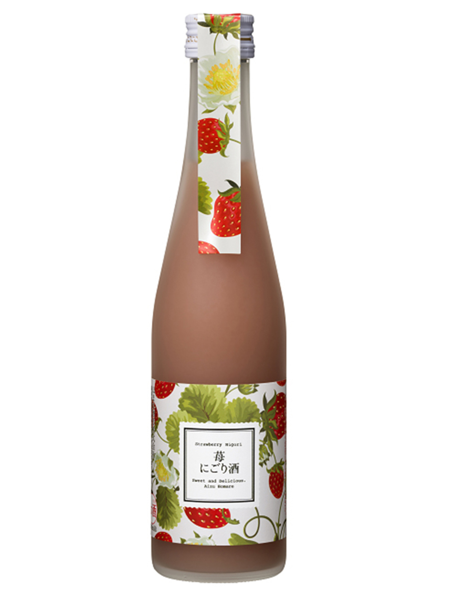
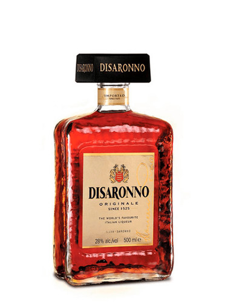
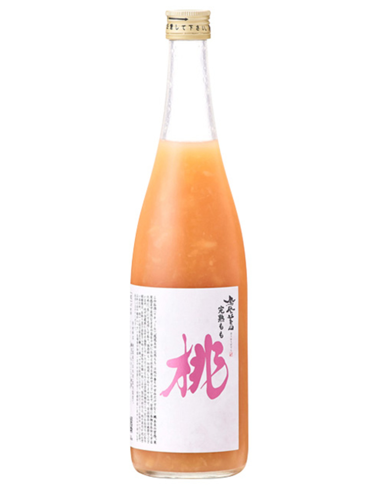
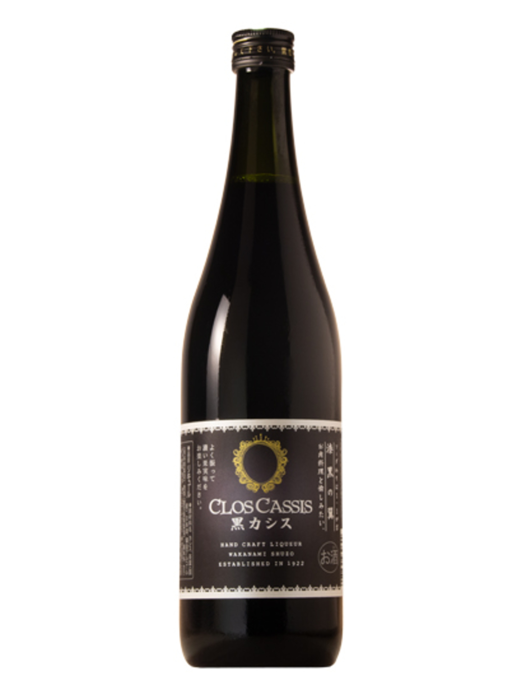

濁風莓酒
當山間的微風拂過，揉碎了熟透的野莓。這款『濁風莓酒』保留了果實最純粹的天然纖維，呈現如薄霧般的優雅微濁感。入口是濃郁卻不甜膩的莓果香氣，伴隨微風般清爽的酸甜層次，是一杯將大自然溫柔定格的微醺日常。

阿瑪雷特杏仁香甜酒
阿瑪雷特源自義大利，傳說在 1525 年文藝復興時期，一位年輕的寡婦為感謝畫家大師為她作畫，用杏仁核心、杏桃核與多種香料浸泡在義大利白蘭地中，釀造出這款帶有濃郁杏仁與焦糖香氣的歷史名酒。

鳳凰美田 完熟蜜桃酒
網紅激推、蜜桃控絕對不能錯過的夢幻酒款！『鳳凰美田 完熟蜜桃酒』不惜成本以頂級清酒為基底，並採用全日本專利技術將鮮桃液化，原封不動鎖住果實的新鮮與色澤。倒出來是極致濃郁的滿滿果肉感，入口的濃厚質地簡直就像『直接大口啃咬熟透的水蜜桃』一樣震撼！僅有 6% 的低酒精度，加冰塊或氣泡水就是最奢華的微醺享受。

山形正宗 熟成梅酒
這是一瓶獻給真正懂酒之人的成熟系梅酒。水戶部酒造以自家最引以為傲、高純度的『山形正宗 純米吟釀』清酒為基底，將嚴選的頂級梅子浸漬後，再經過精準的『低溫熟成』工藝。長時間的歲月洗禮，讓清酒的凜冽米香與梅子的醇厚酸香完美融為一體。入口完全不甜膩，反而帶著溫潤、乾淨且深邃的優雅餘韻，非常適合餐中搭配肉類料理享用。

若波 黑醋栗烏龍茶香甜酒
當法式的優雅果香，遇上東方的內斂茶韻。這款『黑醋栗烏龍茶香甜酒』完美融合了黑醋栗熟透的濃郁酸甜，與深焙烏龍茶獨有的沉穩木質香與焙火尾韻。入口先是爆汁般的莓果酸甜襲來，隨後被溫潤的茶香優雅包裹，酸甜與茶感在舌尖完美平衡，是一杯讓人回味無窮的微醺新時尚。